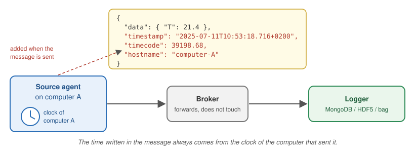
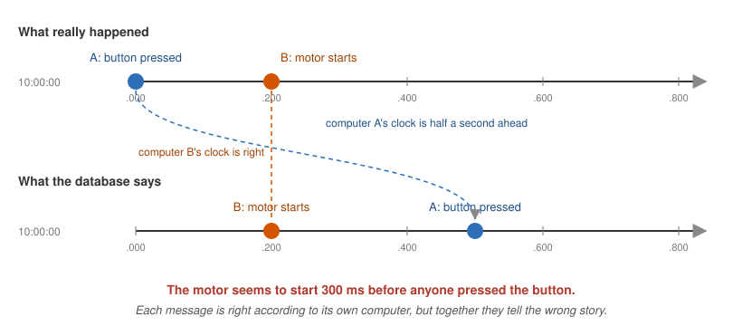
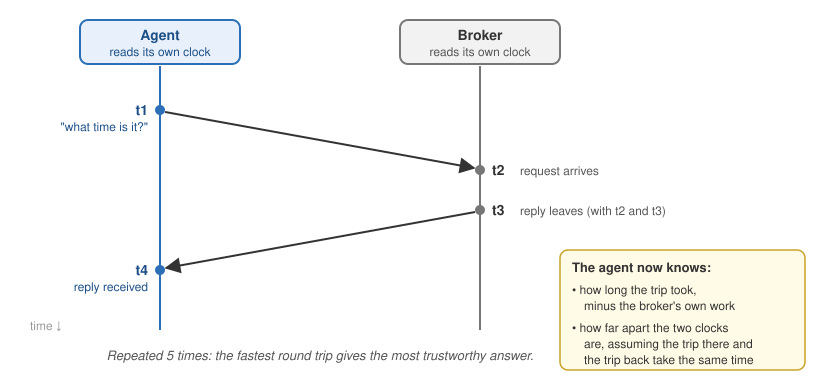

Time and time synchronization
MADS collects and transforms data from a network of distributed devices: synchronizing the timestamps is of paramount importance for having a quality database.
Why time matters
A MADS network usually spans several computers: a Raspberry Pi reading sensors, a workstation running a controller, a server storing everything in a database. When you look at the data afterwards, you want to answer questions like:
- did the temperature rise before or after the motor started?
- how long did the controller take to react to that alarm?
- what were all sensors reading at 10:53:18?
To answer them, every message must carry the time at which it was produced, and those times must be comparable across computers. This guide explains how MADS writes time into messages, why different computers rarely agree on what time it is, and how MADS v2.5.0 helps you measure and fix the disagreement.
- Every message gets a
timestampand atimecode, read from the clock of the computer that sent it. - Computer clocks drift apart. The standard fix is NTP, a service that keeps a computer’s clock on time.
- From v2.5.0, every agent automatically measures how far its clock is from the broker computer’s clock. Run
mads top --probeto see it. - If you can’t (or don’t want to) set up NTP everywhere, add
clock_correction = trueto the[agents]section ofmads.ini: all timestamps will then be aligned to the broker’s clock.
How MADS puts time into a message
Every time an agent publishes a message, MADS adds three fields to it (unless the message already has them):
{
"data": { "T": 21.4 },
"timestamp": { "$date": "2025-07-11T10:53:18.716+0200" },
"timecode": 39198.68,
"hostname": "computer-A"
}timestamp-
The date and time, down to the millisecond, in the standard ISO 8601 format. The final
+0200is the time zone of the sending computer, so the timestamp identifies one exact instant no matter where it was produced. The odd-looking{"$date": ...}wrapper lets MongoDB store it as a real date, so you can search and sort by it. This is the field used by the loggers and by the replay agent. timecode-
The number of seconds since local midnight, rounded to a frame. It is a plain number, which makes it convenient for plots and for lining up samples from different sources. The frame length is set by
timecode_fpsin the[agents]section ofmads.ini: with the default of 25 frames per second, timecodes are multiples of 40 ms. In the example, 39198.68 s is 10:53:18.68. hostname- The name of the computer that sent the message.
The important point is where these values come from:

The time is read from the clock of the computer that sends the message, at the moment the message is sent. The broker only forwards the message, and the logger stores it as it arrives. Neither of them changes the time.
So if computer A’s clock is wrong, every message from computer A carries a wrong time, and nothing further along the chain will notice.
If your plugin or script already puts a timestamp or timecode field in the message, MADS keeps yours. This is useful when your device has its own precise acquisition time, such as a data acquisition board with a hardware clock. It also means that you are responsible for that time being correct.
Timecode caveats
The timecode is handy but has three limits you should know about:
- It restarts at midnight. A recording spanning midnight goes from 86399.96 back to 0. Use
timestampwhen you need the date too. - It uses local time. Two computers set to different time zones produce timecodes that are hours apart for the same instant. Set all MADS computers to the same time zone, or use
timestamp, which includes the time zone. - It is rounded to the frame. At 25 fps, two messages sent 10 ms apart can have the same timecode. If you need finer resolution, use
timestampor raisetimecode_fps.
The problem: every computer has its own clock
Every computer keeps time with a small quartz crystal. These crystals are cheap and good, but not perfect: a typical one gains or loses a few seconds per day, and the exact amount changes with temperature. Some situations make it worse:
- A Raspberry Pi has no battery-backed clock. When it boots without a network connection, it starts from the last time it remembers, which can be hours or days in the past.
- A virtual machine or container host that has been suspended can wake up with its clock stuck at the moment it was suspended.
- A clock that was set by hand is usually off by a few seconds from the start.
Left alone, two computers that agree today will disagree by seconds after a few weeks. For a MADS network this matters a lot, because it changes the story your data tells:

Here, computer A’s clock is only half a second ahead, and the database now says the motor started before the button was pressed. With the same error, a measured reaction time could come out negative, or two signals that should be in step could appear shifted. You will not get an error message: the data simply looks wrong, or worse, looks right but isn’t.
Nothing in the data itself tells you whether the clocks were in agreement. You have to check it while the system is running, because once the data is in the database it is usually too late to find out.
The classic fix: NTP
The standard solution, used by nearly every computer connected to the internet, is the Network Time Protocol (NTP). A small service on each computer regularly asks a time server what time it is, measures how long the answer took to arrive, and gently adjusts the local clock so it stays in step. With a good setup, computers on the same local network agree to within a millisecond or better. Over the internet, the agreement is within a few milliseconds.
Most operating systems enable NTP by default, as long as the computer can reach a time server. This is how to check it:
timedatectl statusLook for System clock synchronized: yes and NTP service: active. If your system uses chrony (common on recent distributions), you can get more detail, including the current error, with:
chronyc trackingThe System time line tells you how far the clock is from the NTP time.
NTP is enabled in System Settings → General → Date & Time → Set time and date automatically. To see the current error against a time server:
sntp time.apple.comThe first number printed is the difference in seconds between your clock and the server’s clock.
NTP is enabled in Settings → Time & language → Date & time → Set time automatically. To check its status from a terminal:
w32tm /query /statusand to force an immediate update (from an administrator terminal):
w32tm /resyncWhen NTP is not enough
NTP works well, but in real MADS installations you often hit one of these cases:
The network is isolated. Machine networks in labs and factories are often cut off from the internet, so no public time server can be reached. You can turn one of your computers into a local time server. The broker computer is a natural choice. For example, with chrony on Linux, add these two lines to
/etc/chrony/chrony.confon the broker computer and restart chrony:allow 192.168.1.0/24 # the address range of your MADS network local stratum 10 # keep serving time even with no internetThen point the other computers to it. However, this needs administrator access and some care on every machine.
You can’t configure some of the devices. This includes embedded boards, computers managed by someone else, or a colleague’s laptop that joins for one experiment.
You don’t know whether it is working. NTP runs silently. Each computer can say whether it thinks it is synchronized, but nothing tells you whether the whole MADS network actually agrees right now.
This is where MADS v2.5.0 comes in.
What’s new in MADS v2.5.0
Starting with v2.5.0, MADS itself can measure, show and, if you ask it to, correct the differences between the clocks of your computers. You don’t need to write any code for this, and in most cases you don’t need to change any settings either.
The reference clock is always the clock of the computer running the broker. It doesn’t matter whether that clock is exactly right. What matters is that all agents are compared against the same clock, so that their timestamps can be compared with each other.
Step 1 — Each agent measures its offset (automatic)
When an agent starts, it contacts the broker to download its settings. Since v2.5.0, it also runs a short time check with the broker. Five times in a row, it asks the broker “what time is it?” and notes when the question left and when the answer came back:

The exchange produces four times. Two are read on the agent’s clock and two on the broker’s clock. From these, the agent works out two things:
- the delay: how long the message spent travelling on the network, there and back
- the offset: how many milliseconds must be added to the agent’s clock to read the same time as the broker’s clock
This is the same method NTP uses. Out of the five attempts, MADS keeps the one with the shortest delay, because a fast round trip leaves less room for error.
The result is printed in the agent’s startup summary:
Timecode FPS: 25
Timecode offset: 0 s
Clock domain: raspberrypi
Clock offset: 42.017 ms (broker, 0 hops, delay 0.412 ms, ref sensor_1:1)To read these lines:
- Clock offset: 42.017 ms means this computer’s clock is about 42 ms behind the broker’s clock. A negative number means it is ahead.
- delay 0.412 ms is the network round-trip time. On a wired local network this is typically well below a millisecond. On Wi-Fi it can be a few milliseconds.
- Clock domain and ref are explained in the next step.
Measuring does not change anything. By default, MADS only measures and reports the offset. Your computer’s clock is never touched, and the timestamps in your messages are exactly as they were before v2.5.0. Correcting the timestamps is a separate choice (see Step 3).
Seeing the whole network: mads top
The mads top command (see man mads-top) shows the live traffic on your MADS network. Since v2.5.0 it helps you check the clocks in two ways.
At a glance: the Host clock skew section
In its normal mode, mads top adds a Host clock skew section below the topic table. For each computer that is sending messages, it shows the difference between the time written in the messages and the time on the computer where you run mads top:
Host clock skew (passive, vs. this machine's local time -- see 'mads top --probe' for a real measurement)
raspberrypi +41.3ms
workstation -3.3msThis costs nothing, as it only reads messages that are already travelling on the network, and it works with agents of any MADS version. However, it mixes the clock difference with the network delay, so treat it as a rough indicator:
- a few milliseconds: fine, that’s just the network
- hundreds of milliseconds or more: the clocks disagree, and it’s time to look closer
In detail: mads top --probe
mads top --probeIn this mode, mads top asks every agent on the network to report its current offset, and displays them grouped by clock domain:
mads top --probe 5 responder(s) link: up (press q to quit)
(this agent) domain laptop offset +1.2ms (broker, 0 hops, ref top@8812:1)
DOMAIN raspberrypi
sensor_1 raspberrypi +42.0ms broker 0 hops delay 3.1ms
sensor_2 raspberrypi +42.0ms broker 0 hops delay 2.8ms
filter raspberrypi +42.0ms broker 0 hops delay 3.4ms
DOMAIN workstation
logger workstation -3.1ms broker 0 hops delay 1.9ms
controller workstation -3.1ms broker 0 hops delay 2.2msWhat to look for:
- Within a domain, all offsets are identical. If they differ and stay different, something is wrong, for example agents that cannot hear each other.
- Across domains, the offsets tell you how far each computer is from the broker computer. If you rely on NTP, all offsets should be within a few milliseconds. Large numbers mean NTP is not doing its job on that computer.
- An offset shown as
?means that agent has not measured anything yet. It may have just started, or it has measuring turned off.
The delay column is the time the probe took to reach that agent and come back through the broker. It is naturally larger than the delay in the startup summary, and does not affect the offset shown.
This is the only mode in which mads top sends something on the network instead of just listening. The probe is very light and harmless for the other agents.
Step 3 — Correct the timestamps (optional)
If you know that some computers’ clocks can’t be trusted, you can tell MADS to correct the timestamps using the measured offset. Add this line to the [agents] section of mads.ini (to apply it to all agents), or to the section of a single agent:
[agents]
clock_correction = trueFrom now on, when an agent sends a message, it adds its offset to its local time before writing timestamp and timecode. As a result, all messages carry the broker computer’s time, no matter which computer sent them.
A corrected message is always marked as such, so that you can tell it apart from an uncorrected one:
{
"data": { "T": 21.4 },
"timestamp": { "$date": "2025-07-11T10:53:18.758+0200" },
"timecode": 39198.72,
"hostname": "raspberrypi",
"clock_offset_us": 42017,
"clock_ref": "sensor_1:1"
}clock_offset_us-
The correction that was applied, in microseconds (millionths of a second). If you ever need the original local time, subtract it from
timestamp. In the example, 10:53:18.758 − 42 ms = 10:53:18.716. clock_ref- Which measurement was used, so that you can check that messages from different agents were corrected against the same reference.
Correction only helps if the agent can measure its offset. If an agent can’t reach the broker to measure, its messages are sent uncorrected, and in that case the clock_offset_us and clock_ref fields are missing. If you turn on correction, check for these fields in your data.
Keeping up with drift
By default, the offset is measured once, when the agent starts. For short experiments this is enough. For an agent that runs for days, the clocks keep drifting apart after the measurement: without NTP, typically by tens of milliseconds per hour.
To measure again periodically, set clock_interval_ms:
[agents]
clock_correction = true
clock_interval_ms = 60000 # measure again every minuteOnly one agent per clock domain actually measures again, and the others adopt its result. So even with many agents, this costs just a few tiny messages per minute.
Each new measurement makes the corrected time jump to the new value. In most cases the jump is a small fraction of a millisecond. After a long gap, or after the computer’s clock was changed by hand, it can be larger, and two consecutive messages can even appear slightly out of order. If your analysis is sensitive to this, keep clock_interval_ms short, so that each jump stays small.
Agents that can’t reach the broker directly
The measurement described in Step 1 uses the same connection that agents use to download their settings from the broker. Some agents don’t have that connection:
- agents on another network, connected through
mads-bridgeormads-federate - agents that load their settings from a local
.inifile instead of from the broker (for example, started with-s my_settings.ini)
For these agents, set:
clock_source = "peer"With this setting, the agent measures its offset by exchanging messages with the other agents on the network, along the same path its data takes. Each answering agent also reports its own offset from the broker, so the final result still refers to the broker’s clock, reached in more than one step. The number of steps is reported as hops in the startup summary and in mads top --probe.
Peer measurements go through the broker twice, so they are less precise than the direct ones: expect errors of a few milliseconds rather than fractions of a millisecond. They only work if at least one other agent on the network answers. Agents answer by default, as long as they subscribe to at least one topic. Also, the first peer measurement happens right after the agent connects, so its startup summary may still say Clock offset: not yet measured. Use mads top --probe to see the value.
Settings reference
All settings go in the [agents] section of mads.ini to apply to every agent, or in a single agent’s section to apply only to it. They are all optional. The values shown are the defaults.
[agents]
clock_source = "broker" # "broker", "peer", or "none"
clock_sync_responder = true # answer other agents' clock checks
clock_interval_ms = 0 # 0 = measure only at startup
clock_announce_ms = 5000 # how often to share the result with the same domain
clock_correction = false # apply the offset to timestamp/timecode| Setting | What it does |
|---|---|
clock_source |
"broker": measure against the broker (most precise). "peer": measure through other agents (see above). "none": don’t measure at all. |
clock_sync_responder |
Whether this agent answers clock checks from other agents and from mads top --probe, and shares its result with agents in the same domain. Leave it on unless you have a reason not to. |
clock_interval_ms |
How often, in milliseconds, to measure again. 0 means only once at startup. |
clock_announce_ms |
How often, in milliseconds, each agent shares its offset with the other agents on the same computer. |
clock_correction |
If true, timestamp and timecode are corrected to the broker’s clock, and every message carries clock_offset_us and clock_ref. |
v2.5.0 uses a special topic named clocksync for these exchanges. Don’t use that name for your own topics. Like the control and agent_event topics, it is automatically excluded from recordings made with mads-record and from mads-federate.
Which setup should I use?
- Everything runs on one computer
-
Nothing to do: there is only one clock.
mads top --probewill show a single domain with an offset close to zero. - Several computers, all with working NTP
-
Leave the defaults. Check with
mads top --probefrom time to time, and especially before an important experiment: all offsets should be within a few milliseconds. Leaveclock_correctionoff, because NTP already does the job, and does it more smoothly. - Isolated network, or computers you can’t configure
-
Make sure the broker computer has a reasonably correct clock, ideally with NTP, or at least set carefully by hand. Then turn on correction and periodic measuring for the whole network:
All timestamps will be consistent with each other, even if the other computers’ clocks are off by minutes.
[agents] clock_correction = true clock_interval_ms = 60000 - Agents behind
mads-bridgeormads-federate -
Use
clock_source = "peer"for those agents, as described above. - Brief sessions, where you only care about order within one agent’s data
- You can leave everything as is. Time differences within one agent’s messages are always reliable, because they come from a single clock.
Good to know
- MADS never changes your computer’s clock. It only measures, and, if you ask it to, corrects the times written in messages. NTP stays the right tool for keeping the system clock on time, and the two can work together.
- Accuracy. On a wired local network, the measured offset is typically accurate to a fraction of a millisecond. The method assumes a message takes the same time to go and to come back. When it doesn’t (busy Wi-Fi, a slow VPN), the error is up to half the difference between the two directions.
- Older brokers. An agent from v2.5.0 or later connected to an older broker simply can’t measure. The startup summary shows
Clock offset: not yet measuredand everything else works as before. However, agents and broker should in any case share the same major.minor version. - Timecode offset. The startup summary also shows an older
Timecode offsetline. It is a single, coarse comparison with the broker, rounded to the timecode frame (40 ms at 25 fps). It is still there for compatibility, but the newClock offsetis far more precise. - Sub-millisecond needs. If you need to align data to within microseconds (for example, vibration signals from different boards), you need hardware-level synchronization, such as PTP (IEEE 1588) or a shared trigger signal. That is beyond what software over a normal network can do, and beyond the scope of this guide.